Features
What's in Noodle
Each part of Noodle with a real screenshot, roughly in the order you'll meet them. Skins have a page of their own.
Sidebar and spaces
Tabs are listed down the left side. Spaces group them by topic, each with its own colour that tints the sidebar and the top bar. A space can have its own accent, wallpaper and skin.
Tabs you haven't looked at for a while are frozen, then unloaded, so a long tab list stays cheap.
- Alt+1 to Alt+9 switch spaces
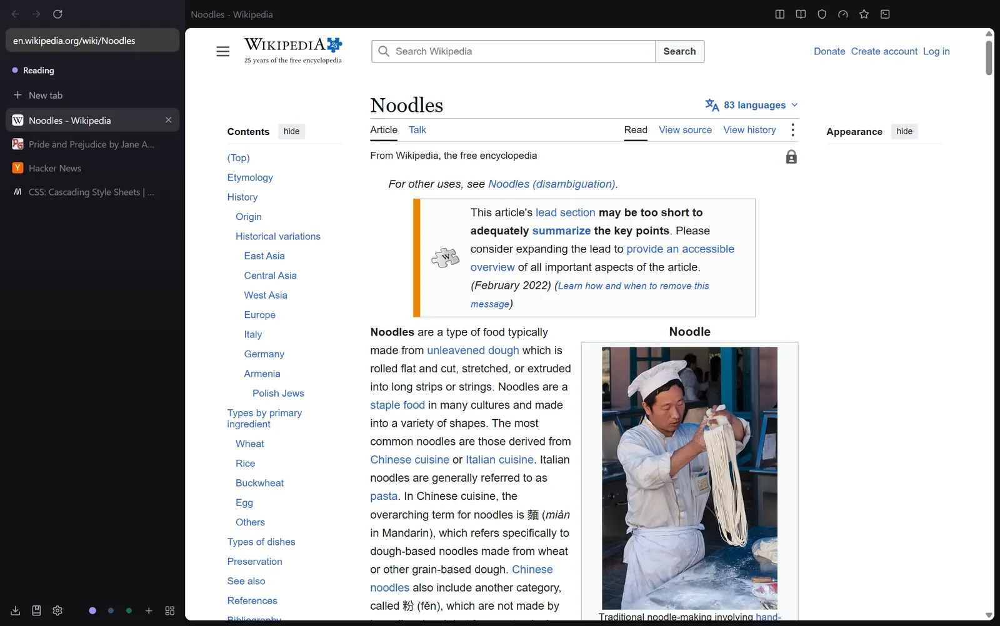
Split view
Put two tabs side by side from the keyboard or a tab's menu. Drag the divider to resize them, or swap the panes.
Split pairs are saved with the session and come back after a restart.
- Ctrl+Shift+\ split with the next tab
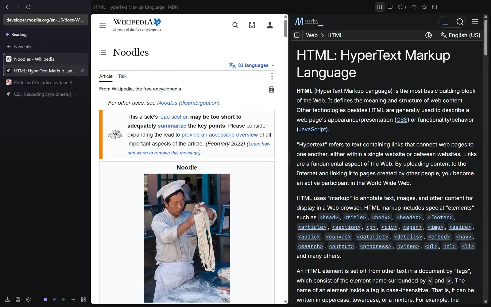
Command palette
The palette mixes open tabs, history and search suggestions with commands, so most of Noodle can be reached from the keyboard: reader view, the reading list, skins and layout, modes, park tab and save to canvas.
This site has a small one too. Press Ctrl K to try it.
- Ctrl+K current tab
- Ctrl+T new tab
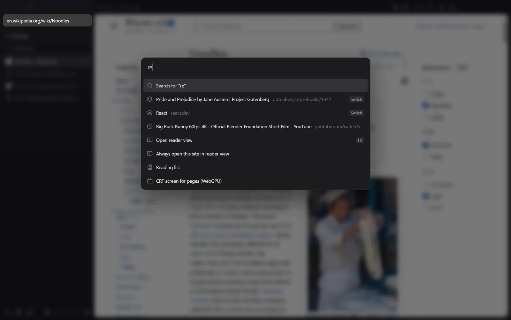
Canvas board
Every space has an infinite board. Tabs show as cards with live snapshots, next to notes, quotes, pictures, saved pages and files.
Frames can work as lanes with Queue, In progress and Done, which turns the board into a watch and reading list with Play next. Board data is stored in the encrypted profile.
- Ctrl+Shift+E open the board
- Alt+S save the page
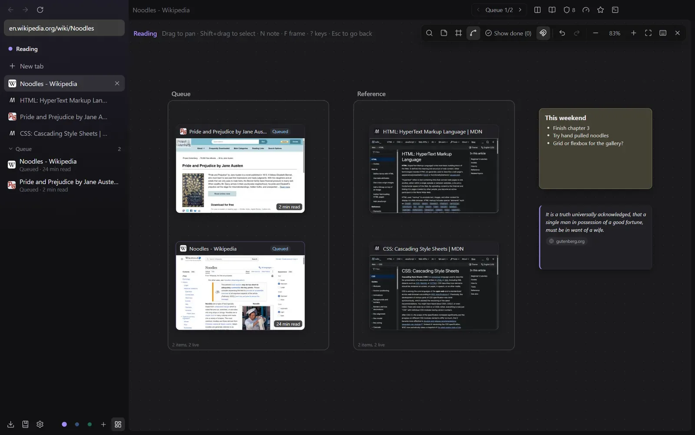
Downloads
Files of 1 MB or more are fetched over several connections at once when the server allows it: 8 by default, anywhere from 1 to 16 in Settings.
Downloads can be paused and resumed, and unfinished ones come back paused after a restart.
- Ctrl+J downloads
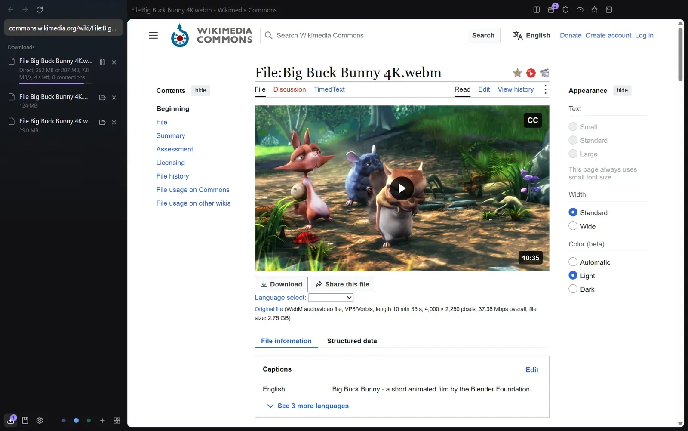
Video downloader
The video button in the top bar lists what a page offers: direct files, HLS and DASH streams, and a record mode for players that offer nothing else.
There are readers for YouTube, Reddit, Vimeo, X, Instagram and TikTok, plus a generic one for any page with media on it. It all runs inside Noodle, with no separate downloader to install.
Media player
Local video and audio open in Noodle's own player: from the downloads panel, with Ctrl O, or by dropping a file on the window. It plays MP4, WebM, MKV, MOV, TS and the usual audio formats.
It has subtitles (styled ASS included), audio track choice, timeline thumbnails, frame stepping, A-B loop, snapshots and VLC-style keys. It can trim, join, crop and convert clips, and save a frame or a GIF.
- Ctrl+O open a file
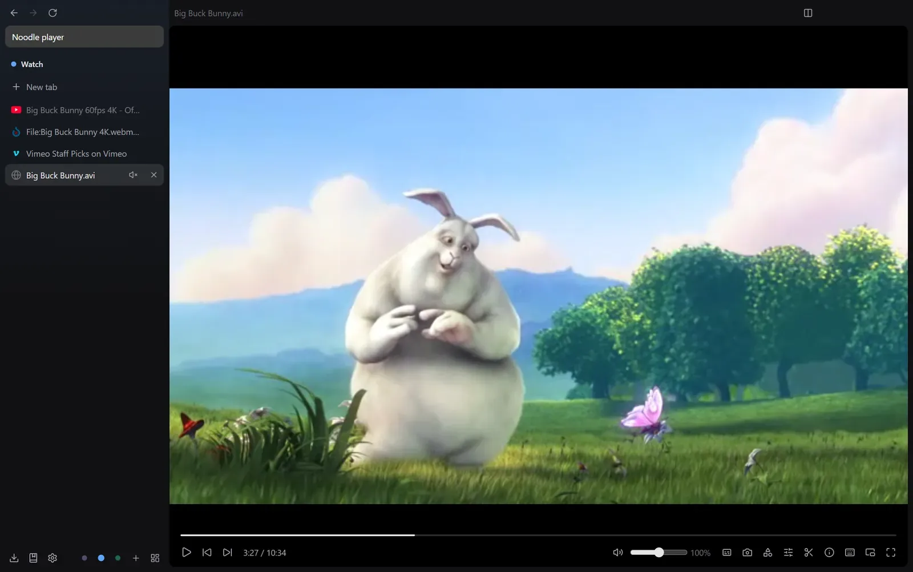
Older formats
That folder of old AVI files plays too. MPEG-1 and MPEG-2 (with deinterlacing), Xvid and DivX, WMV 7 to 9, VC-1, H.263, DV and MJPEG in AVI, FLV, MPG, VOB, ASF and similar files are decoded in WebAssembly.
The decoder only loads when you open one of those files.
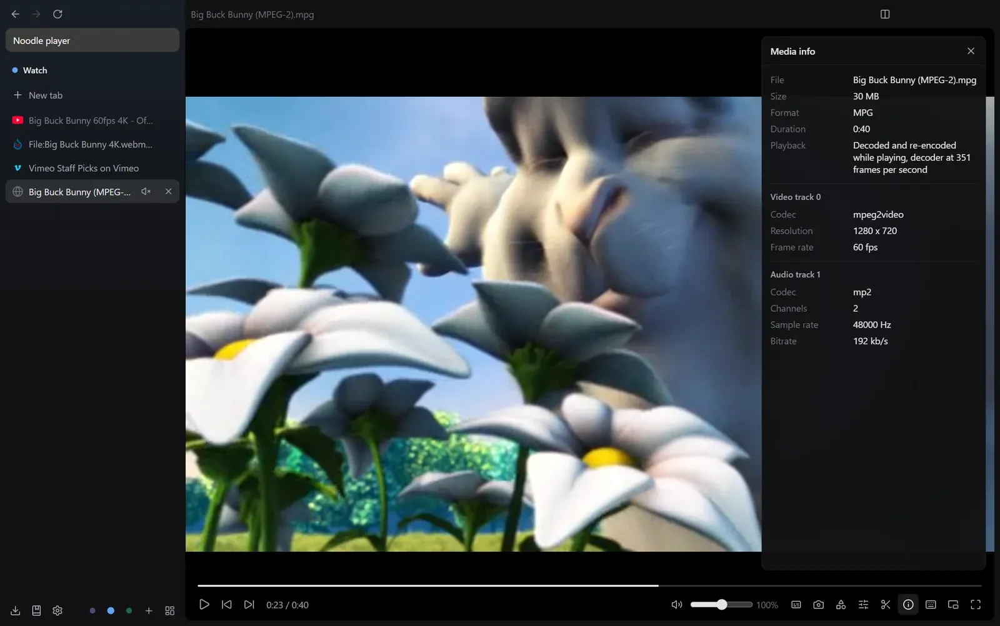
Image viewer and editor
Pictures open in a viewer with zoom, pan, rotate, folder browsing, a slideshow and an EXIF panel. HEIC, TIFF and camera RAW previews open as well.
The editor crops and straightens, adjusts exposure and colour, draws arrows, boxes and text, and blurs or pixelates parts of a picture. It exports PNG, JPEG, WebP or AVIF, without metadata unless you ask to keep it.
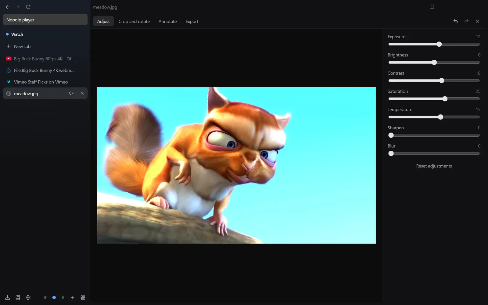
Reader view
On article pages, reader view gives you five themes, four fonts (Atkinson Hyperlegible among them), adjustable size, spacing and width, and read aloud with the voices on your system.
Highlight passages, add notes, send them to the canvas, and save articles to a reading list that works offline. Sites can be set to always open in reader view.
- F9 or Alt+R reader view
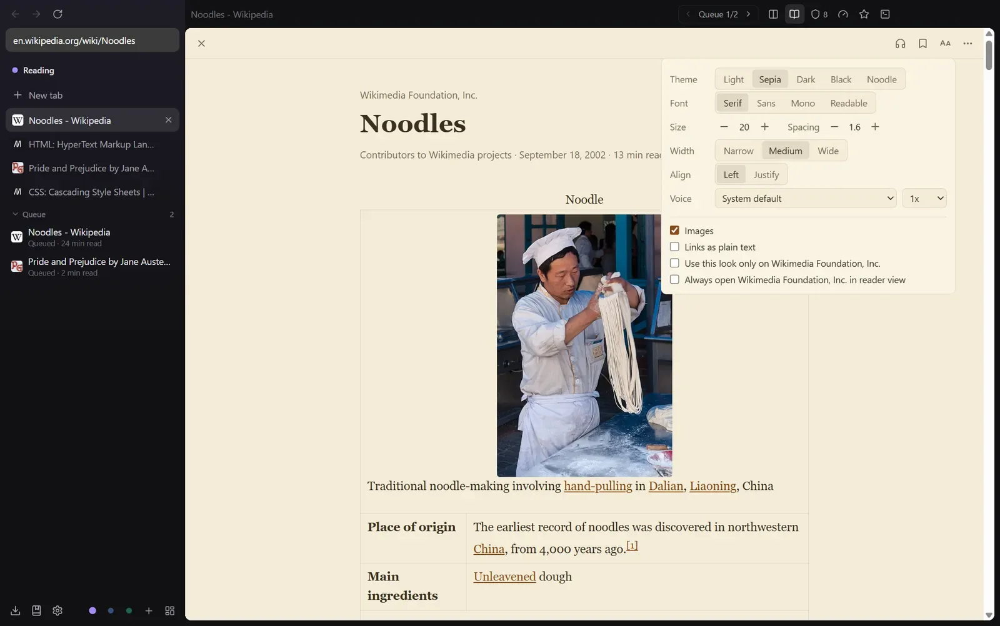
New tab page
Blank tabs show a clock, a search field and up to 24 shortcuts you can drag into order. The background follows the skin or takes a colour or picture of your own.
Noodle draws the page itself, so it appears at once and makes no web requests.
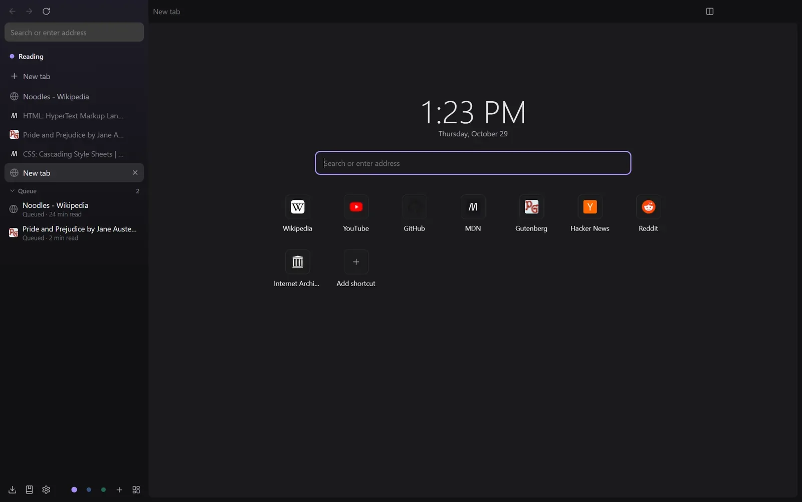
Modes
Modes are presets over speed and motion. Balanced is the default. Battery turns off transitions and early loading and rests background tabs sooner. Performance loads links on hover and keeps more tabs ready. Elegance uses longer, softer page transitions.
An optional rule moves to Battery when the battery runs low and back when you plug in. Settings you change by hand keep your value.
- Ctrl+Shift+M next mode
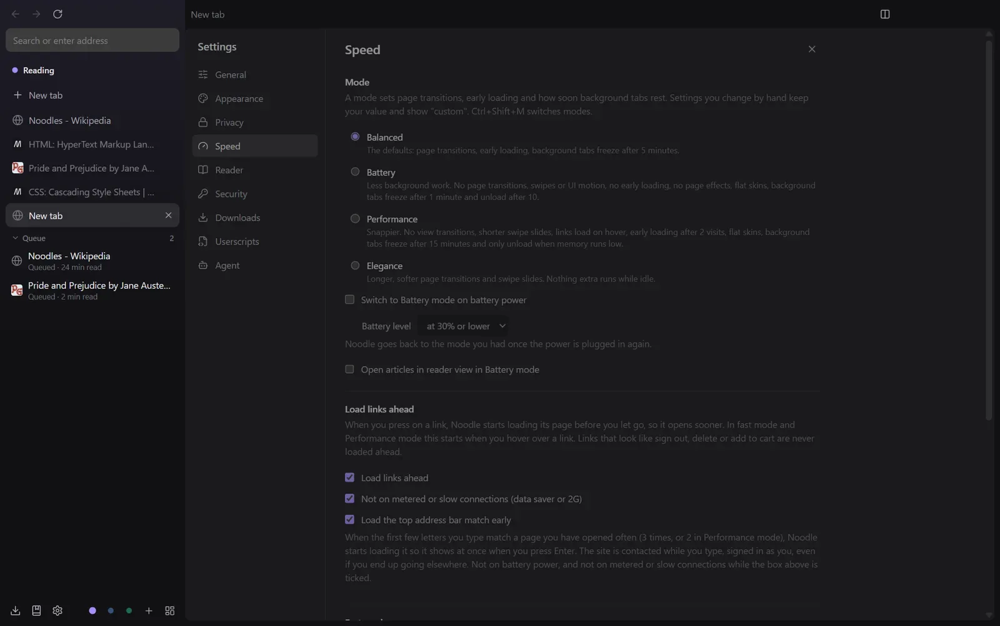
Agents and approvals
The MCP server is off until you turn it on in Settings, Agent. It listens only on 127.0.0.1 and needs a token. Agents get compact snapshots with short element refs and batched actions that report only what changed.
Sensitive actions stop at an approval card: deny, allow once, or allow that kind of action on the site until you restart. Tabs the agent uses get a purple outline, a live log shows every call, and if a CAPTCHA shows up Noodle brings the tab forward and waits for you.
- Ctrl+Shift+. stop every agent
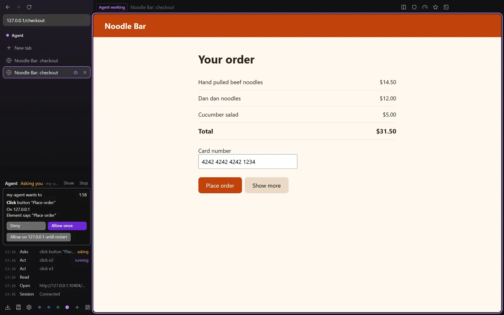
Userscripts
Scripts written for Tampermonkey and Violentmonkey run unchanged, with the full header, the GM_ and GM. APIs, @require and @resource with hash checks, menu commands and daily update checks. Backups from both managers import.
Requests to hosts outside a script's @connect list ask you first, and an update that wants more sites waits for your review. Scripts can also register tools that agents call over MCP.
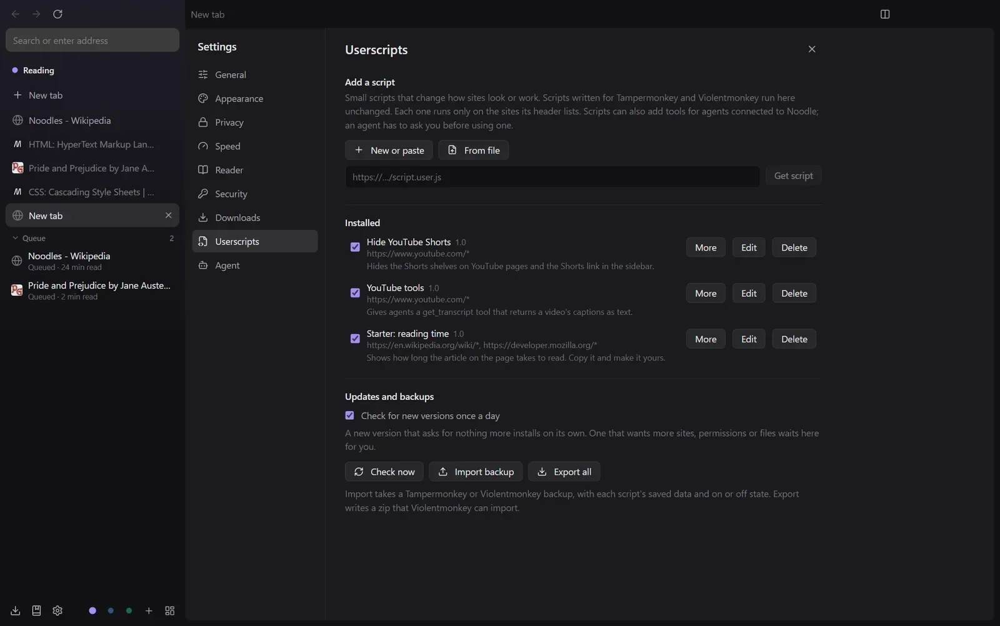